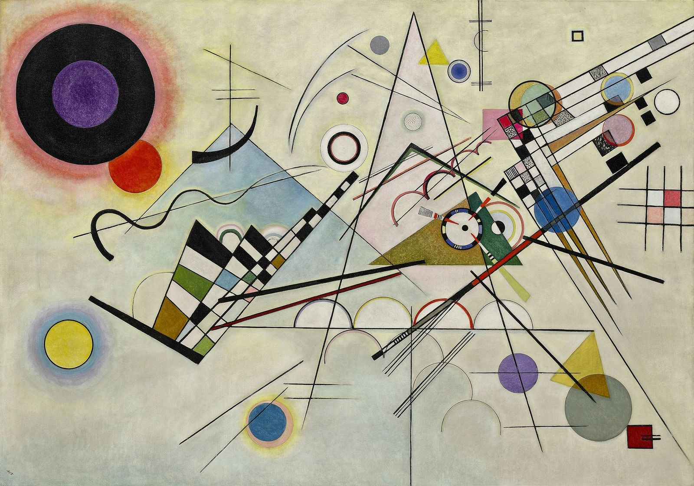
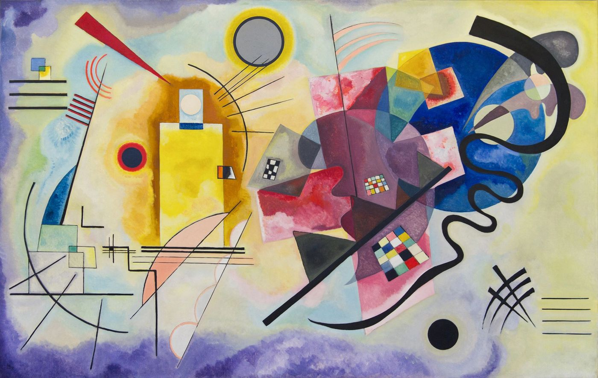

יחידות / 03
יחידה 03
מוזיקה וריתמוס כמקור השראה
צליל · קצב · תנועה

איך מציירים צליל? התלמידים חוקרים סינאסתזיה, קצב חזותי והניסויות החושיים של אמנים שהשתמשו במוזיקה.
6 שיעורים + פרויקט מסכם
- השראה
- התבוננות
- רעיון
- יצירה
מקורות השראה ורקע על האמנים

אמנים ביחידה
- ז׳אן-מישל בסקיהשיעור 3.2
- פיט מונדריאןשיעור 3.3
- פאול קלהשיעור 3.4
- ג׳קסון פולוקשיעור 3.2
- וסילי קנדינסקישיעור 3.1
גישות
- סינאסתזיה
- קצב ודפוס
- ג'אז ואילתור
- תווים כאמנות
השיעורים
-
3.1
קנדינסקי וסינאסתזיה
לשמוע צבע, לראות צליל, האמן שצייר מוזיקה
על השיעור
התלמידים מאזינים לשתי יצירות מוזיקליות מנוגדות ויוצרים תגובות חזותיות, ואז משווים עם הניסויים החזותיים-מוזיקליים של קנדינסקי עצמו.
50 דקות בפיתוח -
3.2
ג'אז ואקספרסיוניזם מופשט
אילתור, קצב וחופש יצירת הסימן
על השיעור
כיצד תרבות הג'אז השפיעה על האקספרסיוניזם המופשט? התלמידים יוצרים ציור מחוות מאולתר תוך האזנה לרצועת ג'אז, מעבירים קצב לסימן.
55 דקות בפיתוח -
3.3
מונדריאן ורשת המוזיקה
כיצד Broadway Boogie-Woogie הפך ג'אז לגאומטריה טהורה
על השיעור
יצירת המופת הסופית של מונדריאן מדמיינת את קצב רחובות ניו-יורק ומוזיקת הג'אז דרך רשת של קווים וריבועים צבעוניים. התלמידים מתכננים רשת 'קצב עיר' משלהם.
45 דקות בפיתוח -
3.4
פול קלה, ציור כתווים
הצייר-מוזיקאי שהפך כל קו לתו
על השיעור
קלה היה כנר מוסמך שחשב על ציור כמו שמלחין חושב על מנגינה. התלמידים יוצרים 'תווים חזותיים', ציור שנקרא כמו מוזיקה.
50 דקות בפיתוח -
3.5
הפלייליסט שלך, הפלטה שלך
מוזיקה אישית כזהות חזותית, איך נראה הפסקול שלך?
על השיעור
התלמידים מביאים את המוזיקה שלהם ומתרגמים 3 רצועות לתגובות חזותיות, בונים טריפטיך שמייצג את זהותם המוזיקלית.
55 דקות בפיתוח -
3.6
✦ צליל לתמונה פרויקט מסכםפרויקט מסכם
פרויקט מסכם, תרגום יצירת מוזיקה שלמה לעבודה חזותית רב-חלקית
על השיעור
התלמידים בוחרים יצירת מוזיקה ויוצרים רצף חזותי המתאים למבנה שלה, מגיבים לטמפו, דינמיקה, מצב רוח ומעברים עיקריים.
60+ דקות בפיתוח